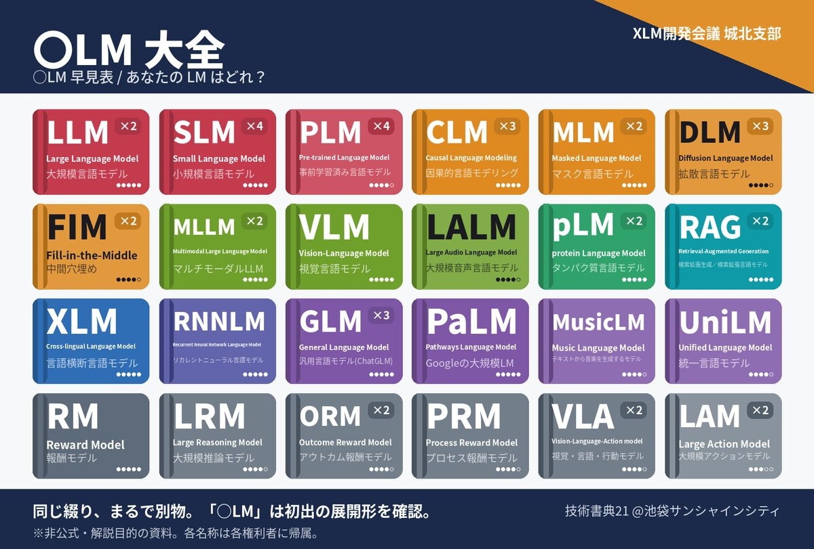

技術書典21
配置 あ07
- オフライン会場
- 2026年11月23日（月・祝）
池袋サンシャインシティ 展示ホールD（文化会館ビル2F） - オンラインマーケット
- 2026年11月21日（土）〜 12月6日（日）
- 頒布予定
- 新刊『言素 vol.1』
ノベルティ「〇LM大全」
配置 あ07
新刊 技術書典21 で頒布予定
Loop Engineeringの実践と AI for Scienceの未来
実装と評価のループから、AIによる科学の発見まで。
二つの実践を通して、知のつくり方と確かめ方を考える。
Coding Agent に「テストを動かして」「その失敗を直して」と何度も伝え直す——その往復そのものを設計する方法を、本書ではループエンジニアリングと呼びます。目的と完了条件を決め、実装を動かして観測し、評価した結果を次の修正へ返す。続ける条件だけでなく、止める条件と人間へ判断を戻す出口も用意します。
具体例として、GitHub Issue から変更案を作り、テストとレビューを経て成否付きの Draft PR を渡す「Loop Worker」を使い、ブラウザゲームに数独を1本追加するまでを追います。
AI が科学の「発見」や数学の「証明」をした、という最近の話題を2つ取り上げます。文献に書かれていなかった遺伝子間の関係を予測し、外部の実験で支持された Sony AI の Hakken。そして、2026年9月に OpenAI が発表し、いまも評価が分かれているナビエ–ストークス方程式の証明です。
そこから、発見・発明・証明はどう違うのかを整理します。仮説や証明を AI で安く大量に作れるようになっても、科学の進む速さを決めるのは「確かめる」側、つまり検証だ、という見方が軸です。最後に、AI を研究にどう使うか、これからの展望と、功績や発表をめぐる社会の規範を考えます。
※内容は制作中のため変更になる場合があります。

同じ綴り、まるで別物。
あなたの LM はどれ？
サークル名の「XLM」にちなんで、LLM・SLM・VLM・RAG……と増え続ける言語モデル関連の略語を、周期表風の早見表にまとめました。論文・公式ブログなどの一次情報で74語の実在を確かめ、そこから重要度の高いものを選んで掲載しています。
同じ綴りで別の意味を持つ「略語衝突」もあわせて紹介しています。
技術書典21 の会場で配布予定です（形態・部数は準備中）。
※非公式・解説目的の資料です。各名称は各権利者に帰属します。
XLM開発会議 城北支部は、Language Model の更なる活用を模索する技術同人誌サークルです。技術書典などのイベントで、AI と開発に関する本を頒布しています。
サークル名の「XLM」の X は、任意の1文字です。LLM、SLM、VLM……と増え続ける言語モデルの略語の、どれでもよい「何かの LM」を表します。X を「×（かける）」と読んで、LM を何かとかけ合わせて開発や研究に生かす、という意味も込めています。「城北支部」は、メンバーが東京の城北（山手線の北側）にルーツを持つことから名付けました。
@xlm_dev 新刊やイベントのお知らせは X で発信します。